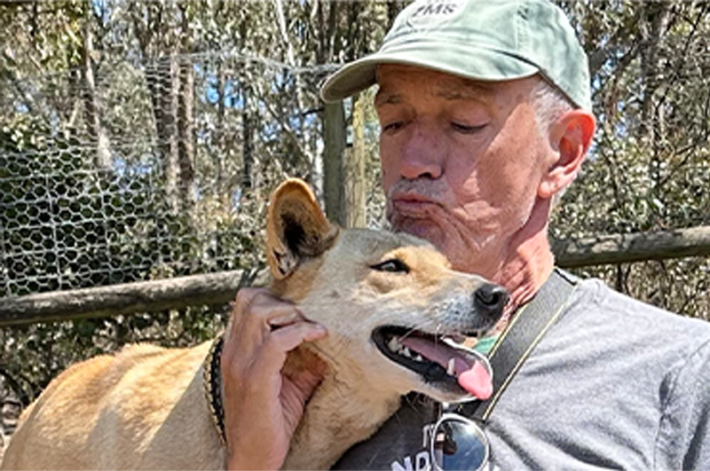
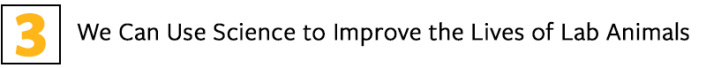

Larry Carbone has spent his entire career thinking about what happens to animals in research labs. As a veterinarian with specialization in lab animal medicine, he has made friends with many caged creatures: monkeys, pythons, mice, shrimp. But he also has a Ph.D. in the history and philosophy of science, which gives him theoretical grounding to consider big ethical questions. An animal welfare scholar, speaker, and trainer, he also writes about public policy, ethics, and the animals he has met. Carbone has authored two books, What Animals Want, published in 2004, and most recently, The Hidden Lives of Lab Animals: A Vet’s Vision for a More Human Future. Below, three revelations he had while working on his latest book.

What a thrill to turn 14, finally old enough for my first job, an unpaid volunteer at the local zoo. No task was too dirty or menial if it let me play with my favorite animals. Cleaning every species of animal poo from turtles to monkeys would eventually lead to my career as a veterinarian. But like Winston, one of the young chimps I loved to tickle, I ended up not in a zoo, but in medical research. My book, The Hidden Lives of Lab Animals, is my report from that world, as I show people who’ve never visited an animal lab why and how scientists are still running animal experiments, and how we can and should treat those animals better.

THE ETHICIST: Larry Carbone says lab animals deserve greater care and consideration. Shrimp, dogs, monkeys, all can suffer and have feelings. We can use science itself to improve their lives. Here he is pictured with a dingo at a sanctuary near Melbourne. Credit: David Takacs.
Through my years of doctoring an assortment of animals, my feelings for them matured as my understanding of their feelings grew. At the zoo, we had our hierarchies among the animals. We would thrill to watch Esther the python subdue her lunchtime rats with no thought—on her part or ours—for the rats’ feelings. Were they frightened? Did it hurt? Could we have somehow made their final minutes less awful?
Through my veterinary work, I began to understand the wide range of animals from fish and shrimp to dogs and monkeys capable of experiencing pain, and pleasure, and desires. They are sentient and can suffer, and my duty as a vet goes beyond simply caring about that in my heart to actually helping the animals in the lab.
I learned almost nothing about animal pain diagnosis or treatment as a vet student, but that’s exactly the knowledge I needed as a mouse and monkey vet in research labs. Lab animals are at risk not just of pain, but also of hunger, fear, frustration, thirst, and more. All of these, if we wish to treat or prevent suffering, require closer observation than the quick look in the mouse or monkey cages that is standard lab practice.
In fact, we can ask animals how they are feeling, and understand much of what they are telling us. Welfare researchers have identified the many twitches and grimaces animals make when they’re feeling poorly and think we are not watching them. Now, machine learning systems can track the painful squint of a pig or mouse, enabling 24/7 animal welfare surveillance.
Scientists do often cause animal suffering, in their pursuit of medical cures for humans. Step one in balancing animal harms against human benefits is to actually see the ways in which the animals suffer. Even dogs, our familiars, can be inscrutable. A dog may yelp in pain, and all of us can understand that. But anyone who has lived with an aging, ailing dog knows that what should be obvious—is my old dog in pain?—is a challenge even for vets. Those pains require careful observation and hands-on exams, a thorough medical history and a trial with pain medicines.
Lab animals are at risk not just of pain, but also of hunger, fear, frustration, thirst, and more.
Researchers launched animal welfare as a science some 50 years ago, giving chickens an assortment of solid or grid cage floors and asking them to vote with their feet for their preference. Since then, simple preference tests have evolved into an intricate exploration of how many animals have the cognitive and emotional sophistication to have feelings about their feelings.
My favorites are the tests of animal personality shifts. Animals can learn to associate a cue—such as vertical or horizontal stripes near a food dish—with a low-probability high-stakes reward, or vice-versa. Like a confident person betting big money on an unlikely jackpot, an optimistic animal will invest the energy in exploring the high-payout option, even though in reality it will likely yield nothing. Optimism is not hard-wired in any species or individual; nonhuman and human alike can toggle between optimism and pessimism when stressed or happy, in sickness or in health. This is true of people, mice, monkeys, but also of crabs and octopuses and maybe even cockroaches. What a powerful tool for asking animals what truly matters to them! We can use that knowledge to give lab animals better lives, and also to improve the science for which we enlist them.
Read more: “Living with Lab Mice”
Medical researchers should know how much animal suffering can throw off their animal experiments. Animals who are sick, in pain, stressed, cold, frustrated, or thirsty respond differently to experimental cancer treatments. Their immune systems and their brain development are out of whack. Stress affects glucose metabolism, throwing a wrench into diabetes experiments. Beyond their ethical obligation to tend to their animals’ welfare, scientists’ own self-interest should push them to study only healthy, normal animals. The more welfare scientists explore animal pain and pleasure, the more they point to the ways that animal stress is not just bad for the animals but also bad for the scientists’ data.

My quest in writing this book has been to distill this emerging knowledge of animals’ sentience into prescriptions for more humane animal care. Nonanimal alternatives have not yet developed enough for us to shut down all the animal labs. But if we must keep them open, animal welfare science must drive reforms for better animal stewardship.
In other words: We can use science to improve the lot of laboratory animals.
First, do no harm. The better we get at measuring animal suffering, the clearer it is that we miss seeing it 90 percent of the time. So, scientists and ethics committees must therefore assume that their experiments are more painful than they realize, and redesign them so as not to cause suffering in the first place. Ethics committees need to find their voice and reject animal experiments whose balance of animal harms to potential human benefits doesn’t measure up.
Medical researchers should know how much animal suffering can throw off their animal experiments.
Experiments cause animal suffering, but so too does routine laboratory housing. Animal welfare regulations set outdated standards for how animals should live. The small steel or plastic boxes our laws allow are an affront to science-based animal welfare. Even within the confines of these enclosures, welfare science helps us better understand animals’ preferences for social versus alone time, for opportunities to do whatever burrowing or exploring or hiding they choose, for some control over their living conditions.
As I learned how animal ethologists can move from a study of pain and distress to studies of animal happiness, it reinforced my conviction that when we must use animals in labs, we must also be preparing them for their lives after the lab. Monkeys deserve a chance to retire to sanctuaries with compatible others of their kind. Dogs belong on a beach, chasing tennis balls. Rats, too, can appreciate a chance to live out their days in a loving home.
I am as eager as anyone for the day when scientists no longer find a need for animal experiments. Until that day, the science of animal welfare can help us give the best possible lives to the animals hidden in laboratories. 
Lead image: Laurens Hoddenbagh / Shutterstock
References
- Original Article: https://nautil.us/how-animal-suffering-can-ruin-lab-experiments-1266988/